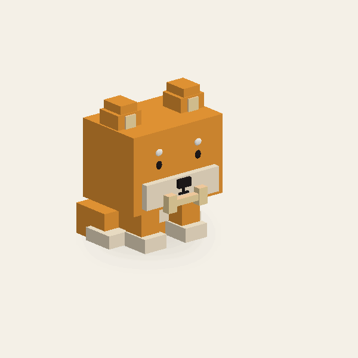

D01 / PROCEDURAL ATTACK
시바멈
뼈다귀 뱉기 · 뼈를 문 채 고개를 젖혔다가, 앞으로 까딱하며 퉤! 뼈를 뱉어요.

프리뷰 범위
실제 파트 지오메트리와 이펙트를 프레임 사이에서 보간합니다. 준비·발사·회복 구간을 확인할 수 있으며, 게임 피해·충돌 판정은 포함하지 않습니다.
로컬 Three.js와 스크립트 데이터만 사용합니다. Roblox Studio 가져오기는 아직 검증하지 않았습니다.
뼈다귀 뱉기 · 뼈를 문 채 고개를 젖혔다가, 앞으로 까딱하며 퉤! 뼈를 뱉어요.

실제 파트 지오메트리와 이펙트를 프레임 사이에서 보간합니다. 준비·발사·회복 구간을 확인할 수 있으며, 게임 피해·충돌 판정은 포함하지 않습니다.
로컬 Three.js와 스크립트 데이터만 사용합니다. Roblox Studio 가져오기는 아직 검증하지 않았습니다.